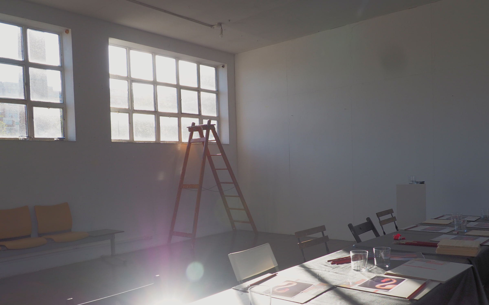

Senso Studioartist-led · Barcelona / on-site

Built for contextThe artistic practice stays central. The format changes according to who is coming together and why.
01teamsculture / connection
02guestshospitality / community
03friendsprivate / occasions
04childrenmaterial / play